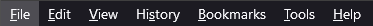

How to use Toggle Native Tab Bar
Here are some instructions on how to use this extension...
(REQUIRED) Enabling userChrome.css (Skip this section if you already use userChrome.css)
- First, go to "about:config" and set "toolkit.legacyUserProfileCustomizations.stylesheets = TRUE" to enable
userChrome.css usage
- Next, go to "about:profiles" and look for the profile that says "This is the profile in use and it cannot be
deleted"
- On the row for "Root Directory", click on "Open Folder" to open the profile folder in your file manager
- Inside the profile folder, create a new folder called "chrome" if it doesn't exist
- Inside the "chrome" folder, create a new file called "userChrome.css" if it doesn't exist
- Make sure you do not create the file as userChrome.css.txt
(REQUIRED) Entering CSS to hide or show the native tab bar into userChrome.css
- Add the following text to your userChrome.css file:
#main-window #titlebar {
overflow: hidden;
transition: height 0.3s 0.3s !important;
}
/* Hidden state: Hide native tabs strip */
#main-window[titlepreface*="XXX"] #titlebar { height: 0 !important; }
/* Hidden state: Fix z-index of active pinned tabs */
#main-window[titlepreface*="XXX"] #tabbrowser-tabs { z-index: 0 !important; }
This addon populate\removes "XXX" to the titlepreface property which is then acted on by your
userChrome.css
Mozilla reference: https://developer.mozilla.org/en-US/docs/Mozilla/Add-ons/WebExtensions/API/windows/update
Save your "userChrome.css" file and restart Firefox
(INFO) Here are some items to be aware of ...
- The addon icon will change based on if the tabs should be displayed or not
-
-- This is what
the addon icon will look like when the tabs should be displayed
-
 -- This is what
the addon icon will look like when the tabs should be hidden
-- This is what
the addon icon will look like when the tabs should be hidden
- When the native tabs are hidden, you do not have direct access to the minimize\maximize\close buttons.
Workarounds include:
- Use this addon to show the native tab bar again to get access to the native buttons
- Use the keyboard shortcuts (Alt+Space, N, X)
- Use the right-click context menu on the taskbar
- Use the Windows key + arrow keys to move the window around
- Download and use Firefox addons the emulate these functions and place on the toolbar
- When the native tabs are hidden, you do not have direct access to Firefox's menu.
-

-- This is the native Firefox menu
- Use this addon to show the native tab bar again, then press "ALT" to get access to Firefox's menu
- The idea for this addon was inspired Sidebery's feature: Dynamic native tabs
- Atribution for base addon icon that I modified for this usage
 -- These addons can virtually replace the native buttons
-- These addons can virtually replace the native buttons